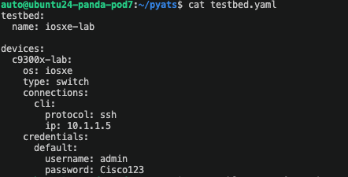
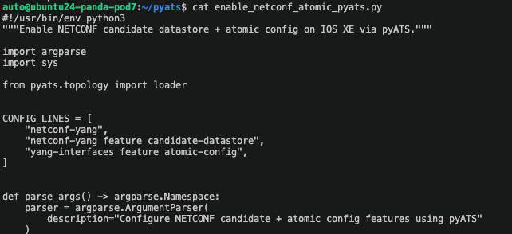
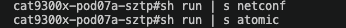
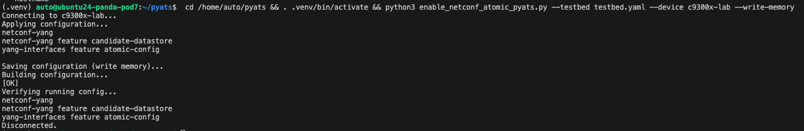
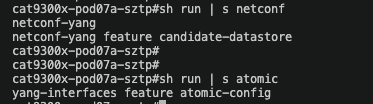

PyATS Testing¶
Automated Testing with Cisco PyATS¶
Use this section to apply required Day 1 platform features with a single PyATS script.
In Day 1, we used Ansible ACR workflows on the 9300X. This module keeps the same NETCONF feature goals, but uses a PyATS workflow on the C9300 lab target at 10.1.1.55.
Goal¶
Configure the following on the C9300 lab switch (10.1.1.55):
Prerequisites¶
- Lab files are already staged in
/home/auto/pyats. - Python 3 is available on the lab VM.
- SSH reachability to
10.1.1.55. - Credentials for
c9300-lab(default lab values:admin/Cisco123).
Testbed Example¶
Use testbed.yaml (already provided in lab files):
testbed:
name: iosxe-lab
devices:
c9300-lab:
os: iosxe
type: switch
connections:
cli:
protocol: ssh
ip: 10.1.1.55
credentials:
default:
username: admin
password: Cisco123
Single PyATS Script¶
Save as enable_netconf_atomic_pyats.py:
#!/usr/bin/env python3
"""Toggle NETCONF candidate datastore and atomic config on IOS XE via pyATS.
Behavior:
- If required lines are missing, apply them.
- If required lines are already present, unconfigure them.
"""
# See docs/resources/pyats/enable_netconf_atomic_pyats.py for full source.
Operation logic in this combined script:
- Reads current running config state.
- Prints line-by-line state as
PRESENTorMISSING. - Chooses operation automatically:
APPLYwhen one or more required lines are missing.UNCONFIGUREwhen all required lines are already present.- Optionally saves config when
--write-memoryis used. - Prints post-operation verification output.
Review Before Running¶
Before executing the script, inspect the testbed and script files directly.
-
Review the testbed target:
Confirm it targets the C9300 switch at
10.1.1.55.
-
Review the script logic:
Confirm the script will configure these lines:
The same script can also unconfigure these lines when it detects they are already present.

PyATS Before Verification¶
Before running the script, verify the target config is not yet present on the device.

Helper Script (run_pyats.sh)¶
Use this helper script to run the PyATS workflow end-to-end.
On first run, the script creates .venv if needed and installs required packages if missing.
Helper file in this repo:
Script content:
#!/usr/bin/env bash
set -euo pipefail
SCRIPT_DIR="$(cd "$(dirname "${BASH_SOURCE[0]}")" && pwd)"
VENV_DIR="${SCRIPT_DIR}/.venv"
DEVICE="c9300-lab"
TESTBED="${SCRIPT_DIR}/testbed.yaml"
WRITE_MEMORY="--write-memory"
usage() {
cat <<'EOF'
Usage:
./run_pyats.sh [--device NAME] [--testbed PATH] [--no-write-memory]
Examples:
./run_pyats.sh
./run_pyats.sh --device c9300-lab
./run_pyats.sh --testbed /home/auto/pyats/testbed.yaml --no-write-memory
EOF
}
while [[ $# -gt 0 ]]; do
case "$1" in
--device)
DEVICE="$2"
shift 2
;;
--testbed)
TESTBED="$2"
shift 2
;;
--no-write-memory)
WRITE_MEMORY=""
shift
;;
-h|--help)
usage
exit 0
;;
*)
echo "Unknown argument: $1"
usage
exit 2
;;
esac
done
if [[ ! -f "${TESTBED}" ]]; then
echo "ERROR: testbed file not found: ${TESTBED}"
exit 2
fi
if [[ ! -d "${VENV_DIR}" ]]; then
echo "Creating virtual environment at ${VENV_DIR}"
python3 -m venv "${VENV_DIR}"
fi
# shellcheck source=/dev/null
source "${VENV_DIR}/bin/activate"
if ! python -c "import pyats,unicon,genie" >/dev/null 2>&1; then
echo "Installing required packages: pyats unicon genie"
python -m pip install --upgrade pip setuptools wheel
python -m pip install pyats unicon genie
fi
cd "${SCRIPT_DIR}"
CMD=(python3 enable_netconf_atomic_pyats.py --testbed "${TESTBED}" --device "${DEVICE}")
if [[ -n "${WRITE_MEMORY}" ]]; then
CMD+=("${WRITE_MEMORY}")
fi
echo "Running: ${CMD[*]}"
"${CMD[@]}"
How it works:
- Creates
.venvif missing. - Activates
.venv. - Installs
pyats,unicon, andgenieonly if missing. - Runs
enable_netconf_atomic_pyats.pywith your selected testbed/device.
Usage:
Optional flags:
./run_pyats.sh --device c9300-lab
./run_pyats.sh --testbed testbed.yaml
./run_pyats.sh --no-write-memory
Run It¶
Follow this flow in order:
- Change to the pyATS working directory:
- Create the virtual environment (one-time setup):
- Activate the virtual environment before running scripts:
- Run the helper script (recommended):
- Optional: run directly with explicit script flags if troubleshooting:
- Exit the virtual environment when done with this set of scripts:
PyATS Demo Output¶
Example of what successful script execution looks like:

(.venv) auto@ubuntu24-panda-pod7:~/pyats$ python3 enable_netconf_atomic_pyats.py --testbed testbed.yaml --device c9300-lab --write-memory
Connecting to c9300-lab...
[STATE] MISSING: netconf-yang
[STATE] MISSING: netconf-yang feature candidate-datastore
[STATE] MISSING: yang-interfaces feature atomic-config
[OPERATION] APPLY: one or more required lines are missing.
[OPERATION] Applying 3 line(s).
Saving configuration (write memory)...
Building configuration...
[OK]
Verifying running config after operation...
netconf-yang
netconf-yang feature candidate-datastore
yang-interfaces feature atomic-config
Disconnected.
When the same script is run again and all lines are already present, expected operation output changes to:
What to look for:
- No Python traceback or connection/authentication errors.
- Clear operation label: either
APPLYorUNCONFIGURE. Building configuration... [OK]afterwrite memory.- Verification output matches the selected operation.
Real NETCONF Proof (<ok/>)¶
Use this test to prove NETCONF is live and accepting RPC operations.
python3 - <<'PY'
from ncclient import manager
with manager.connect(
host="10.1.1.55",
port=830,
username="admin",
password="Cisco123",
hostkey_verify=False,
look_for_keys=False,
allow_agent=False,
timeout=30,
) as m:
lock_reply = m.lock(target="candidate")
print(lock_reply.xml)
unlock_reply = m.unlock(target="candidate")
print(unlock_reply.xml)
PY
Expected proof output includes:
If you see <ok/> for lock/unlock, NETCONF is up and working.
NETCONF Service/Session Verification¶
From the switch CLI, verify NETCONF feature and active sessions:
If available on your image, you can also check YANG management process health:
Validation Commands on Device¶
SSH to the C9300 device first:
Then run:
Expected lines present:
PyATS After Verification¶
After running the script, confirm the configuration lines are now present.

RESTCONF Payload Validation Note (Day 1)¶
In addition to NETCONF checks, you can validate the Day 1 state with a quick RESTCONF read after running PyATS.
Example:
curl -k -u admin:Cisco123 \
-H "Accept: application/yang-data+json" \
"https://10.1.1.55/restconf/data/Cisco-IOS-XE-native:native"
Confirm the response includes netconf-yang with expected Day 1 features present when the script runs in APPLY mode.
Using PyATS with RESTCONF/NETCONF Payloads (Not Covered in This Lab)¶
Per PyATS usage patterns, you can use PyATS as the test orchestration layer (testbed loading, device targeting, assertions, reporting) and send protocol payloads with Python clients inside the same test/script.
-
RESTCONF flow (high level):
- Load device IP/credentials from
testbed.yaml. - Send HTTPS requests to RESTCONF endpoints (for example
/restconf/data/...) using a Python HTTP client. - Validate response codes/body, then assert expected state with follow-up operational checks.
- Load device IP/credentials from
-
NETCONF flow (high level):
- Use device connection details from the PyATS testbed.
- Open NETCONF session on port
830with a NETCONF client library. - Send XML payloads with
edit-config/get-config, then assert post-change state in test steps.
This lab intentionally keeps scope to the PyATS CLI-based script shown above for applying or unconfiguring NETCONF candidate datastore and atomic-config prerequisites.
Lab Transition¶
Before moving to the next module:
- Exit switch CLI and return to your lab VM terminal.
- Confirm your working directory is back in the docs/lab workspace.
- Deactivate Python virtual environments if still active.
Resources¶
Learn more about PyATS at: https://developer.cisco.com/docs/pyats.
Next Steps¶
✅ Completed: Day 1 - PyATS Testing
Continue with Day 1:
➡️ Atomic Config Replace - Safe, atomic configuration changes via NETCONF
Or return to: - Terraform + NETCONF - Day 1 Overview - Day 2: Device Monitoring